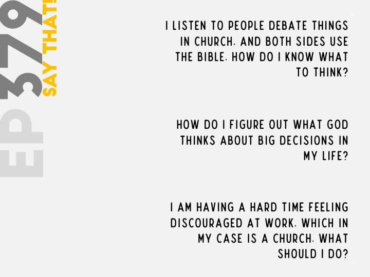
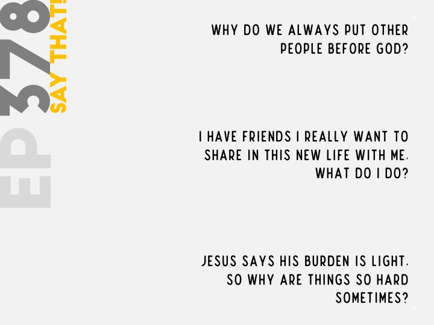
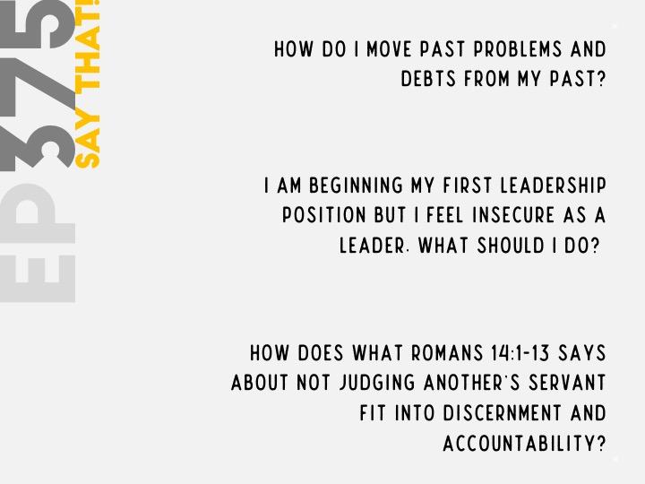
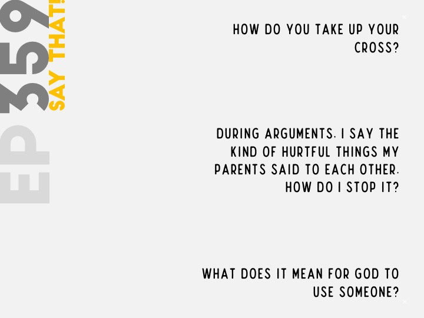
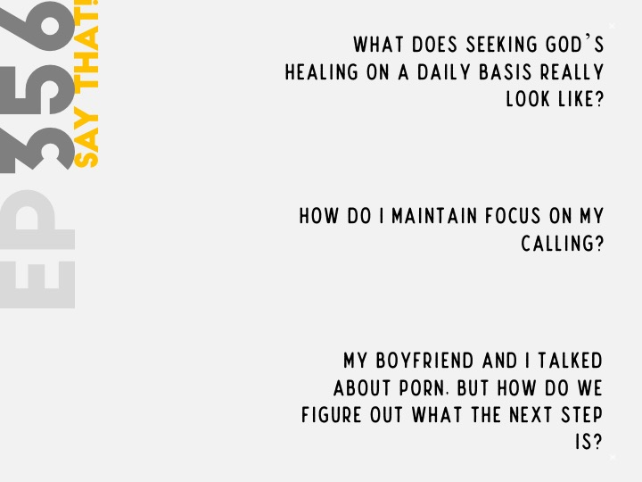
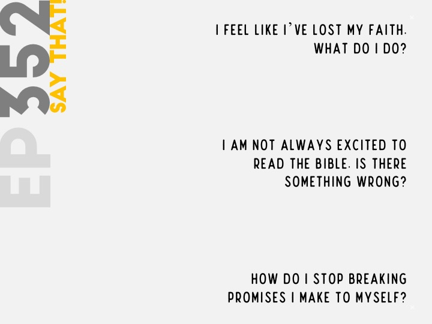
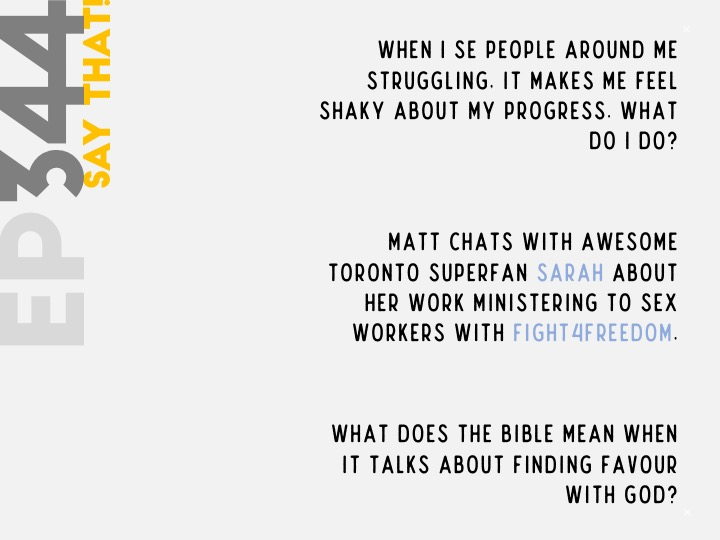
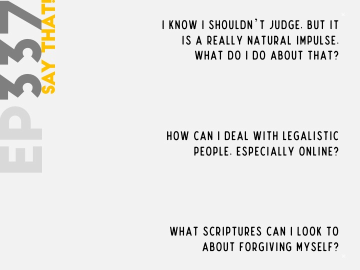
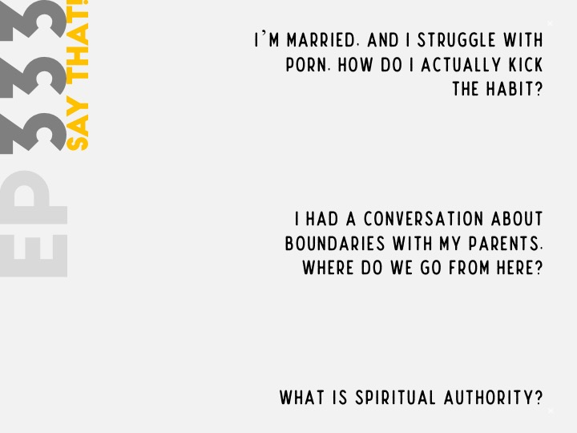

Say That Podcast!








You aren't your sin mean practically for believers? (16:25-34:43) How do you get over perfectionism? (34:47-52:49) Can you recommend some ways to get into the habit of having a devotional? (52:53-1:08:36)" />
